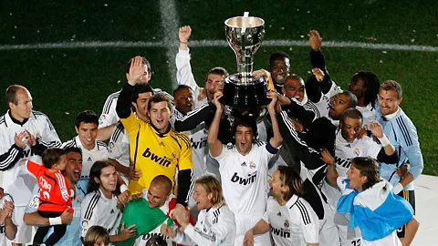
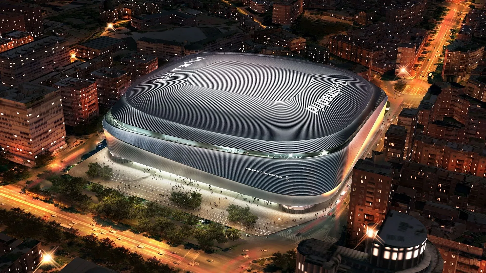
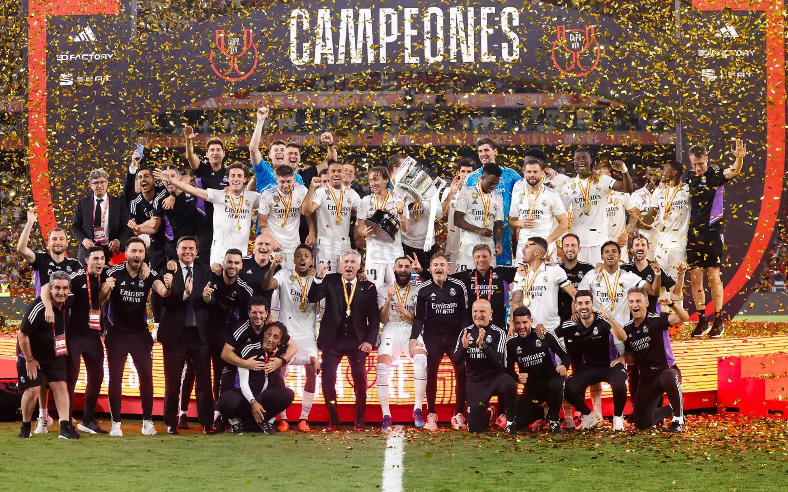
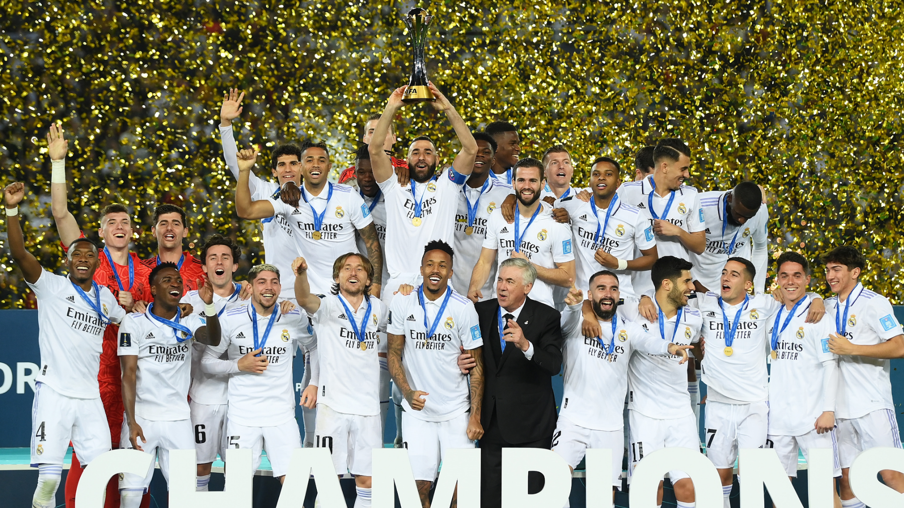

35
La Liga
Dominating Spain, season after season, with unmatched consistency and elite performances.
About The Club
From local beginnings in 1911 to a modern high-performance football program.
Our Story
Founded in 1911, Blurr Football Club has built a strong sporting culture across generations. From junior development through to senior competition, we foster teamwork, resilience, and elite standards both on and off the field.
Home matches are hosted at Blurr Oval, where members, families, and supporters create a high-energy atmosphere each weekend.
Our focus is clear: develop people, strengthen the club, and compete hard every round.

Legacy

35
Dominating Spain, season after season, with unmatched consistency and elite performances.

20
Fighting for glory in every knockout battle, showing resilience, passion, and determination always.

15
Kings of Europe, where legends are made, delivering iconic nights and historic unforgettable victories.

5
Conquering the world, one title at a time, proving global dominance against the best clubs.